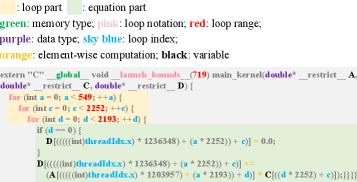
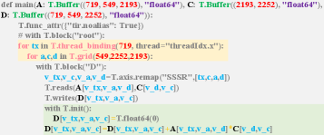
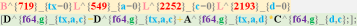
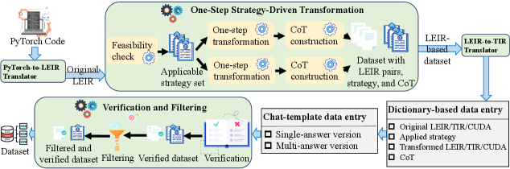
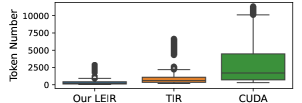

Step-TP introduces a grounded, step-level dataset with chain-of-thought reasoning that enables LLMs to make reliable single-step decisions in tensor program optimization, addressing the lack of verifiable intermediate supervision in existing datasets.
本文提出了Step-TP，一个带有结构化链式推理的细粒度步骤级数据集，用于训练大语言模型进行张量程序优化。该数据集采用一种令牌高效且可验证的中间表示LEIR，并构建了基于中间程序状态的闭环推理，使LLM能够做出可靠的单步决策，而非简单的端到端结果模仿。
Deep Note — step-tp
Key Takeaways - Step-TP provides grounded, atomic step-level supervision with structured chain-of-thought reasoning for LLM-guided tensor program optimization. - The dataset uses LEIR, a token-efficient and verifiable intermediate representation that deterministically lowers to TVM TIR. - Step-TP enables reliable multi-step optimization by forming a closed reasoning loop over intermediate program states, rather than outcome imitation. - The design includes atomic and composable optimization strategies, structured CoT supervision with explicit IR-to-IR transitions, and strategy filtering to prevent shortcut exploitation. - Step-TP addresses limitations of existing datasets that provide only end-to-end optimized pairs or use verbose, low-level code representations.
0) Metadata
- Title: Step-TP: A Grounded, Step-Level Dataset with Chain-of-Thought Reasoning for LLM-Guided Tensor Program Optimization
- Alias: step-tp
- Authors: Mengfan Liu, Da Zheng, Junwei Su, Chuan Wu
- arXiv ID: 2605.25954
- Published:
- Links:
- Abs: https://arxiv.org/abs/2605.25954
- HTML: https://arxiv.org/html/2605.25954v1
- PDF: https://arxiv.org/pdf/2605.25954
- Tags: tensor-program-optimization, chain-of-thought, llm-dataset, intermediate-representation, gpu-kernel-optimization
- Domains: system_safety
- Rating: 2/5 (base 1 + quality 0 + observation 1)
1) Why-read
Step-TP introduces a grounded, step-level dataset with chain-of-thought reasoning that enables LLMs to make reliable single-step decisions in tensor program optimization, addressing the lack of verifiable intermediate supervision in existing datasets.
2) CRGP
C — Context
Tensor program optimization for GPU execution is crucial for deep neural network efficiency, involving decisions like loop tiling, memory hierarchy selection, and operator fusion. Recent approaches use LLMs as decision-makers, but they struggle without targeted post-training data that provides step-level supervision and interpretability.
R — Related work
- Existing datasets like ConCuR, LOOPerSet, and IR-OptSet provide only end-to-end optimized program pairs or use verbose low-level code representations.
- LLM-based tensor optimization approaches (e.g., Zhai et al., Baronio et al., Tang et al.) frame optimization as a sequential decision process but lack step-level supervision.
- Reinforcement learning or search-based fine-tuning for tensor optimization is prohibitively expensive due to compilation and benchmarking costs.
G — Gap
Existing datasets for LLM-guided tensor program optimization provide only end-to-end optimized program pairs using token-inefficient representations, lacking verifiable step-level supervision and interpretability. This causes LLMs to rely on outcome imitation rather than learning reliable single-step decisions in large combinatorial optimization spaces.
P — Proposal
Step-TP is a post-training dataset that provides grounded, atomic, step-level supervision with structured chain-of-thought reasoning. It uses LEIR, a token-efficient intermediate representation that deterministically lowers to TVM TIR, and forms a closed reasoning loop over intermediate program states to enable reliable multi-step optimization.
---
4) Experiments
Main results
The paper does not provide specific numerical results in the abstract or introduction; it focuses on dataset design and principles. Experiments are expected to show improved LLM performance on tensor program optimization tasks using Step-TP for post-training.
Ablation
The paper mentions strategy filtering to balance coverage while preventing shortcut exploitation, but no specific ablation numbers are provided in the available text.
Limitations
['The dataset is limited to tensor program optimization within the TVM TIR framework, potentially restricting generalization to other IRs or backends.', 'The paper does not report experimental results or ablation studies in the provided sections, leaving the practical effectiveness unquantified.', "The dataset's coverage of optimization strategies, while diverse, may still miss some advanced mathematical optimizations or hardware-specific transformations."]
5) Why it matters
- For researchers working on LLM-guided code optimization, Step-TP provides a principled dataset design that enables step-level reasoning rather than outcome imitation.
- The token-efficient LEIR representation addresses context length constraints in LLMs, which is critical for practical deployment.
- The structured CoT supervision with explicit state transitions offers a template for building interpretable optimization agents.
6) Next steps
- [ ] Evaluate Step-TP by fine-tuning an LLM (e.g., LLaMA or CodeLlama) on the dataset and measuring optimization success rate on unseen tensor programs.
- [ ] Compare Step-TP against existing datasets (ConCuR, LOOPerSet) in terms of LLM reasoning accuracy and final program speedup.
- [ ] Extend Step-TP to support additional hardware backends (e.g., AMD GPUs, TPUs) by adapting the LEIR representation.
- [ ] Investigate the impact of strategy filtering on preventing shortcut exploitation and improving generalization.
7) Scoring
2/5 = base 1 + quality 0 + observation 1
Step-TP：面向LLM引导的张量程序优化的带链式推理的细粒度步骤级数据集
主要结论 - Step-TP提供了基于原子步骤的细粒度监督，并带有结构化链式推理，用于LLM引导的张量程序优化。 - 数据集使用LEIR（一种令牌高效且可验证的中间表示），可确定性地降级为TVM TIR。 - Step-TP通过构建中间程序状态的闭环推理，实现了可靠的多步优化，而非结果模仿。 - 设计包括原子且可组合的优化策略、显式IR到IR转换的结构化CoT监督，以及防止捷径利用的策略过滤。 - Step-TP解决了现有数据集仅提供端到端优化对或使用冗长低级代码表示的局限性。
1) 阅读理由
Step-TP通过引入带链式推理的细粒度步骤级数据集，使LLM能够在张量程序优化中做出可靠的单步决策，解决了现有数据集缺乏可验证中间监督的问题。
2) CRGP（背景 / 相关工作 / 差距 / 方案）
上下文：GPU上的张量程序优化对深度神经网络效率至关重要，涉及循环分块、内存层次选择、算子融合等决策。近期方法将LLM作为决策者，但缺乏提供步骤级监督和可解释性的针对性后训练数据。相关工作：现有数据集（如ConCuR、LOOPerSet、IR-OptSet）仅提供端到端优化对或使用冗长的低级代码表示；基于LLM的张量优化方法将优化视为序列决策过程但缺乏步骤级监督；强化学习或基于搜索的微调因编译和基准测试成本过高而难以承受。差距：现有数据集仅提供端到端优化对，使用令牌效率低的表示，缺乏可验证的步骤级监督和可解释性，导致LLM依赖结果模仿而非学习可靠的单步决策。方案：Step-TP是一个后训练数据集，提供基于原子步骤的细粒度监督和结构化链式推理，使用令牌高效的中间表示LEIR，并构建中间程序状态的闭环推理以实现可靠的多步优化。
3) 实验
论文在摘要和引言中未提供具体的数值结果，主要聚焦于数据集设计和原则。实验预期将展示使用Step-TP进行后训练后，LLM在张量程序优化任务上的性能提升。
消融实验
论文提到策略过滤用于平衡覆盖范围并防止捷径利用，但在现有文本中未提供具体的消融实验数值。
局限性
['该数据集仅限于TVM TIR框架内的张量程序优化，可能限制了对其他中间表示或后端的泛化能力。', '论文在提供的章节中未报告实验结果或消融研究，实际有效性尚未量化。', '数据集的优化策略覆盖范围虽多样，但仍可能遗漏某些高级数学优化或硬件特定的变换。']
4) 重要性
- 对于从事LLM引导代码优化的研究人员，Step-TP提供了一种原则性的数据集设计，支持步骤级推理而非结果模仿。
- 令牌高效的LEIR表示解决了LLM的上下文长度限制问题，对实际部署至关重要。
- 带有显式状态转换的结构化CoT监督为构建可解释的优化智能体提供了模板。
5) 下一步
- [ ] 通过在Step-TP上微调LLM（如LLaMA或CodeLlama），并在未见过的张量程序上测量优化成功率来评估Step-TP。
- [ ] 将Step-TP与现有数据集（ConCuR、LOOPerSet）在LLM推理准确性和最终程序加速比方面进行比较。
- [ ] 通过调整LEIR表示，将Step-TP扩展到支持其他硬件后端（如AMD GPU、TPU）。
- [ ] 研究策略过滤对防止捷径利用和提升泛化能力的影响。




